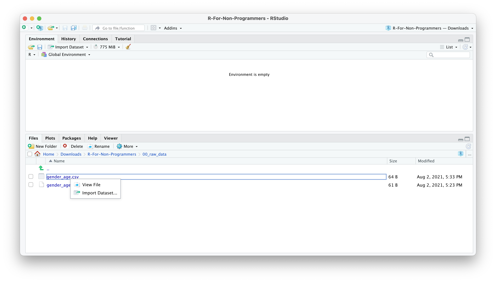
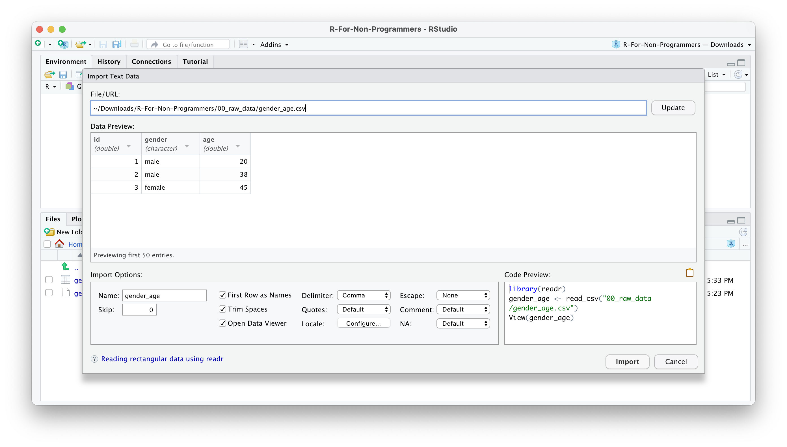
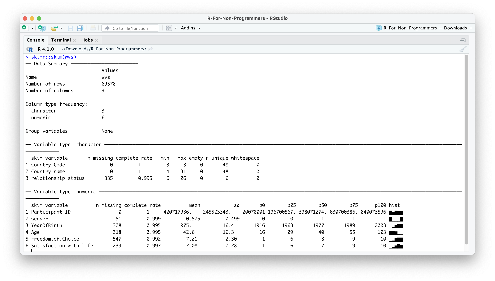

7 Data Wrangling
You collected your data over months (and sometimes years), and all you want to know is whether your data makes sense and reveals something nobody would have ever expected. However, before we can truly go ahead with our analysis, it is essential to understand whether our data is ‘tidy.’ Very often, the data we receive is everything else but clean, and we need to check whether our data is fit for analysis and ensure it is in a format that is easy to handle. For small datasets, this is usually a brief exercise. However, I found myself cleaning data for a month because the dataset was spread out into multiple spreadsheets (no pun intended) with different numbers of columns and odd column names. Thus, data cleaning or data wrangling is an essential first step in any data analysis. It is a step that cannot be skipped and has to be performed on every new dataset.
Luckily, R provides many useful functions to make our lives easier. You will be in for a treat if you are like me and used to do this in Excel. It is a lot simpler using R to achieve a clean dataset.
Here is an overview of the different steps we usually work through before starting with our primary analysis. This list is certainly not exhaustive:
Importing data
Checking data types
Recoding and arranging factors, i.e. categorical data.
Running missing data diagnostics
and other things
7.1 Import your data
The r4np package hosts several different datasets to work with, but at some point, you might want to apply your R knowledge to your own data. Therefore, an essential first step is to import your data into RStudio. There are three different methods, all of which are very handy:
Click on your data file in the Files pane and choose
Import Dataset.Use the
Import Datasetbutton in the Environment pane.Import your data calling one of the
readrfunctions in the console or RScript.
We will use the readr package to import our data. Using this package we can import a range of different file formats, including .csv, .tsv, .txt. If you want to import data from an .xlsx file, you need to use another package called readxl. The following sections will primarily focus on using readr via RStudio or directly in your Console or RScript.
7.1.1 Import data from the Files pane
This approach is by far the easiest. Let’s assume you have a dataset called gender_age.csv in your 00_raw_data folder. If you wish to import it, you can do the following:
Click on the name of the file
Select
Import Dataset.
A new window will open, and you can choose different options. You also see a little preview of how the data looks like. This is great if you are not sure whether you did it correctly.

You can change how data should be imported, but the default should be fine in most cases. Here is a quick breakdown of the most important options:
Nameallows you to change the object name, i.e. the name of the object this data will be assigned to. I often usedf_raw(dfstand fordata frame, which is how R calls such rectangular datasets).Skipis helpful if your data file starts with several empty rows at the top. You can remove them here.First Row as Namesis ticked by default. In most Social Science projects, we tend to have the name of the variables as the first row in your dataset.Trim Spacesremoves any unnecessary whitespace in your dataset. Leave it ticked.Open Data Viewerallows you to look at your imported dataset. I use it rarely, but it can be helpful at times.Delimiterdefines how your columns are separate from each other in your file. If it is a.csvit would imply it is a ‘comma-separated value,’ i.e.,. This setting can be changed for different files, depending on how your data is delimited. You can even use the optionOther…to specify a custom separation option.NAspecifies how missing values in your data are acknowledged. By default, empty cells in your data will be recognised as missing data.

Once you are happy with your choices, you can click on
Import.You will find your dataset in the Environment pane.

In the Console, you can see that R also provides the Column specification, which we need later when inspecting ‘data types.’ readr automatically imports all text-based columns as chr, i.e. character values. However, this might not always be true. We will cover more of this aspect of data wrangling in Chapter 7.4.
7.1.2 Importing data from the Environment pane
The process of importing datasets from the Environment pane follows largely the one from the Files pane. Click on Import Dataset > From Text (readr)…. The only main difference lies in having to find the file using the Browse… button. The rest of the steps are the same as above.
You will have to use the Environment pane for importing data from specific file types, e.g. .txt, because using the File pane would only open the file but not import the data for further processing.
7.1.3 Importing data using functions directly
If you organised your files well, it could be effortless and quick to use all the functions from readr directly. Here are two examples of how you can use readr to import your data. Make sure you have the tidyverse package loaded.
# Import data from '.csv'
read_csv("00_raw_data/gender_age.csv")
# Import data from any file text file by defining the separator yourself
read_delim("00_raw_data/gender_age.txt", delim = "|")You might be wondering whether you can use read_delim() to import .csv files too. The answer is ‘Yes, you can!’ In contrast to read_delim(), read_csv() sets the delimiter to , by default. This is mainly for convenience because .csv files are one of the most popular file formats used to store their data.
You might also be wondering what a ‘delimiter’ is. When you record data in a plain-text file, it is easy to see where a new observation starts and ends because it is defined by a row in your file. However, we also need to tell our software where a new column starts, i.e. where a cell begins and ends. Consider the following example. We have a file that holds our data which looks like this:
idagegender
124male
256female
333maleThe first row we probably can still decipher as id, age, gender. However, the next row makes it difficult to understand which value represents the id of a participant and which value reflects the age of that participant. Like us, computer software would find it hard too to decide on this ambiguous content. Thus, we need to use delimiters to make it very clear which value belongs to which column. For example, In a .csv file, the data would be separated by a ,.
id,age,gender
1,24,male
2,56,female
3,33,maleConsidering our example from above, we could also use | as a delimiter.
id|age|gender
1|24|male
2|56|female
3|33|maleThere is a lot more to readr than could be covered in this book. If you want to know more about this R package, I highly recommend looking at the readr webpage.
7.2 Inspecting your data
For the rest of this chapter, we will use the wvs dataset from the r4np package. However, we do not know much about this dataset, and therefore we cannot ask any research questions worth investigating. Therefore we need to look at what it contains. The first method of inspecting a dataset is to type the name of the object, i.e. wvs.
# Ensure you loaded the 'r4np' package first
library(r4np)
# Show the data in the console
wvs
## # A tibble: 69,578 × 7
## `Participant ID` `Country name` Gender Age relationship_status
## <dbl> <chr> <dbl> <dbl> <chr>
## 1 20070001 Andorra 1 60 married
## 2 20070002 Andorra 0 47 living together as married
## 3 20070003 Andorra 0 48 separated
## 4 20070004 Andorra 1 62 living together as married
## 5 20070005 Andorra 0 49 living together as married
## 6 20070006 Andorra 1 51 married
## 7 20070007 Andorra 1 33 married
## 8 20070008 Andorra 0 55 widowed
## 9 20070009 Andorra 1 40 single
## 10 20070010 Andorra 1 38 living together as married
## # … with 69,568 more rows, and 2 more variables: Freedom.of.Choice <dbl>,
## # Satisfaction-with-life <dbl>The result is a series of rows and columns. The first information we receive is: A tibble: 69,578 x 9. This indicates that our dataset has 69,578 observations (i.e. rows) and 9 columns (i.e. variables). This rectangular format is the one we encounter most frequently in Social Sciences (and probably beyond). If you ever worked in Microsoft Excel, this format will look familiar.
Even though it might be nice to look at a dataset in this way, it is not particularly useful. Depending on your monitor size, you might only see a small number of columns, and therefore we do not get to see a complete list of all variables. In short, we hardly ever will find much use in inspecting data this way. Luckily other functions can help us.
If you want to see each variable covered in the dataset and their data types, you can use the function glimpse() from the dplyr package (loaded as part of the tidyverse package).
glimpse(wvs)
## Rows: 69,578
## Columns: 7
## $ `Participant ID` <dbl> 20070001, 20070002, 20070003, 20070004, 20070…
## $ `Country name` <chr> "Andorra", "Andorra", "Andorra", "Andorra", "…
## $ Gender <dbl> 1, 0, 0, 1, 0, 1, 1, 0, 1, 1, 0, 0, 1, 1, 1, …
## $ Age <dbl> 60, 47, 48, 62, 49, 51, 33, 55, 40, 38, 54, 3…
## $ relationship_status <chr> "married", "living together as married", "sep…
## $ Freedom.of.Choice <dbl> 10, 9, 9, 9, 8, 10, 10, 8, 8, 10, 9, 8, 10, 7…
## $ `Satisfaction-with-life` <dbl> 10, 9, 9, 8, 7, 10, 5, 8, 8, 10, 8, 8, 10, 7,…The output of glimpse shows us the name of each column/variable after the $, for example, `Participant ID`. The $ is used to lookup certain variables in our dataset. For example, if we want to inspect the column relationship_status only, we could write the following:
wvs$relationship_status
## [1] "married" "living together as married"
## [3] "separated" "living together as married"
## [5] "living together as married" "married"
## [7] "married" "widowed"
....After the variable name, we find the recognised datatype for each column in <...>, for example <chr>. We will return to data types in Chapter 7.4. Lastly, we get samples of the data included. This output is much more helpful.
I use glimpse() very frequently for different purposes, for example:
to understand what variables are included in a dataset,
to check the correctness of data types,
to inspect variable names for typos or unconventional names,
to look up variable names.
There is one more way to inspect your data and receive more information about it by using a specialised R package. The skimr package is excellent in ‘skimming’ your dataset. It provides not only information about variable names and data types but also provides some descriptive statistics. If you installed the r4np package and called the function install_r4np(), you will have skimr installed already.
skimr::skim(wvs)The output in the Console should look like this:

As you can tell, there is a lot more information in this output. Many descriptive statistics that could be useful are already displayed. skim() provides a summary of the dataset and then automatically sorts the variables by data type. Depending on the data type, you also receive different descriptive statistics. As a bonus, the function also provides a histogram for numeric variables. However, there is one main problem: Some of the numeric variables are not numeric: Participant ID and Gender. Thus, we will have to correct the data types in a moment.
Inspecting your data in this way can be helpful to get a better understanding of what your data includes and spot problems with it. In addition, if you receive data from someone else, these methods are an excellent way to familiarise yourself with the dataset relatively quickly. Since I prepared this particular dataset for this book, I also made sure to provide documentation for it. You can access it by using ?wvs in the Console. This will open the documentation in the Help pane. Such documentation is available for every dataset we use in this book.
7.3 Cleaning your column names: Call the janitor
If you have an eagle eye, you might have noticed that most of the variable names in wvs are not consistent or easy to read/use.
# Whitespace and inconsistent capitalisation
Participant ID
Country name
Gender
Age
# Difficult to read
YearOfBirth
Freedom.of.Choice
Satisfaction-with-lifeFrom Chapter 5.5, you will remember that being consistent in writing your code and naming your objects is essential. The same applies, of course, to variable names. R will not break using the existing names, but it will save you a lot of frustration if we take a minute to clean the names and make them more consistent.
You are probably thinking: “This is easy. I just open the dataset in Excel and change all the column names.” Indeed, it would be a viable and easy option, but it is not very efficient, especially with larger datasets with many more variables. Instead, we can make use of the janitor package. By definition, janitor is a package that helps to clean up whatever needs cleaning. In our case, we want to tidy our column names. We can use the function clean_names() to achieve this. We store the result in a new object called wvs to keep those changes. The object will also show up in our Environment pane.
wvs <- janitor::clean_names(wvs)
glimpse(wvs)
## Rows: 69,578
## Columns: 7
## $ participant_id <dbl> 20070001, 20070002, 20070003, 20070004, 2007000…
## $ country_name <chr> "Andorra", "Andorra", "Andorra", "Andorra", "An…
## $ gender <dbl> 1, 0, 0, 1, 0, 1, 1, 0, 1, 1, 0, 0, 1, 1, 1, 0,…
## $ age <dbl> 60, 47, 48, 62, 49, 51, 33, 55, 40, 38, 54, 39,…
## $ relationship_status <chr> "married", "living together as married", "separ…
## $ freedom_of_choice <dbl> 10, 9, 9, 9, 8, 10, 10, 8, 8, 10, 9, 8, 10, 7, …
## $ satisfaction_with_life <dbl> 10, 9, 9, 8, 7, 10, 5, 8, 8, 10, 8, 8, 10, 7, 1…Now that janitor has done its magic, we suddenly have easy to read variable names that are consistent with the ‘Tidyverse style guide’ (Wickham 2021).
If for whatever reason, the variable names are still not looking the way you want, you can use the function rename() from the dplyr package to manually assign new variable names.
wvs <- wvs %>% rename(satisfaction = satisfaction_with_life,
country = country_name)
glimpse(wvs)
## Rows: 69,578
## Columns: 7
## $ participant_id <dbl> 20070001, 20070002, 20070003, 20070004, 20070005, …
## $ country <chr> "Andorra", "Andorra", "Andorra", "Andorra", "Andor…
## $ gender <dbl> 1, 0, 0, 1, 0, 1, 1, 0, 1, 1, 0, 0, 1, 1, 1, 0, 0,…
## $ age <dbl> 60, 47, 48, 62, 49, 51, 33, 55, 40, 38, 54, 39, 44…
## $ relationship_status <chr> "married", "living together as married", "separate…
## $ freedom_of_choice <dbl> 10, 9, 9, 9, 8, 10, 10, 8, 8, 10, 9, 8, 10, 7, 10,…
## $ satisfaction <dbl> 10, 9, 9, 8, 7, 10, 5, 8, 8, 10, 8, 8, 10, 7, 10, …You are probably wondering what %>% stands for. This symbol is called a ‘piping operator’ , and it allows us to chain multiple functions together by considering the output of the previous function. So, do not confuse <- with %>%. Each operator serves a different purpose. The %>% has become synonymous with the tidyverse approach to R programming and is the chosen approach for this book. Many functions from the tidyverse are designed to be chained together.
If we wanted to spell out what we just did, we could say:
wvs <-: We assigned whatever happened to the right of the assignment operator to the objectwvs.wvs %>%: We defined the dataset we want to use with the functions defined after the%>%.rename(satisfaction = satisfcation_with_life): We define a new namesatisfactionfor the columnsatisfaction_with_life. Notice that the order isnew_name = old_name. Here we also use=. A rare occasion where it makes sense to do so.
Just for clarification, the following two lines of code accomplish the same task. The only difference lies that with %>% we could chain another function right after it. So, you could say, it is a matter of taste which approach you prefer. However, in later chapters, it will become apparent why using %>% is very advantageous.
# Renaming a column using '%>%'
wvs %>% rename(satisfaction_new = satisfaction)
# Renaming a column without '%>%'
rename(wvs, satisfaction_new = satisfaction)Since you will be using the pipe operator very frequently, it is a good idea to remember the keyboard shortcut for it: Ctrl+Shift+M for PC and Cmd+Shift+M for Mac.
7.4 Data types: What are they and how can you change them
When we inspected our data, I mentioned that some variables do not have the correct data type. You might be familiar with different data types by classifying them as:
Nominal data, which is categorical data of no particular order,
Ordinal data, which is categorical data with a defined order, and
Quantitative data, which is data that usually is represented by numeric values.
In R we have a slightly different distinction:
character/<chr>: Textual data, for example the text of a tweet.factor/<fct>: Categorical data with a finite number of categories with no particular order.ordered/<ord>: Categorical data with a finite number of categories with a particular order.double/<dbl>: Numerical data with decimal places.integer/<int>: Numerical data with whole numbers only (i.e. no decimals).logical/<lgl>: Logical data, which only consists of values ‘TRUE’ and ‘FALSE.’date/date: Data which consists dates, e.g. ‘2021-08-05.’date-time/dttm: Data which consists dates and times, e.g. ‘2021-08-05 16:29:25 BST.’
For a complete list of data types, I recommend looking at ‘Column Data Types’ (Müller and Wickham 2021).
R has a more fine-grained categorisation of data types. The most important distinction, though, lies between <chr>, <fct>/<ord> and <dbl> for most datasets in the Social Sciences. Still, it is good to know what the abbreviations in your tibble mean and how they might affect your analysis.
Now that we have a solid understanding of different data types, we can look at our dataset and see whether readr classified our variables correctly.
glimpse(wvs)
## Rows: 69,578
## Columns: 7
## $ participant_id <dbl> 20070001, 20070002, 20070003, 20070004, 20070005, …
## $ country <chr> "Andorra", "Andorra", "Andorra", "Andorra", "Andor…
## $ gender <dbl> 1, 0, 0, 1, 0, 1, 1, 0, 1, 1, 0, 0, 1, 1, 1, 0, 0,…
## $ age <dbl> 60, 47, 48, 62, 49, 51, 33, 55, 40, 38, 54, 39, 44…
## $ relationship_status <chr> "married", "living together as married", "separate…
## $ freedom_of_choice <dbl> 10, 9, 9, 9, 8, 10, 10, 8, 8, 10, 9, 8, 10, 7, 10,…
## $ satisfaction <dbl> 10, 9, 9, 8, 7, 10, 5, 8, 8, 10, 8, 8, 10, 7, 10, …readr did a great job in identifying all the numeric variables. However, by default, readr imports all variables that include text as <chr>. It appears, in our dataset, this is not entirely correct. The variables country, gender and relationship_status specify a finite number of categories. Therefore they should be classified as a factor. The variable participant_id is represented by numbers, but its meaning is also rather categorical. We would not use the ID numbers of participants to perform additions or multiplications. This would make no sense. Therefore, it might be wise to turn them into a factor, even though we likely will not use it in our analysis and would make no difference. However, I am a stickler for those kinds of things, and I would include in it.
To perform the conversion, we need to use two new functions from dplyr:
mutate(): Changes, i.e. ‘mutates,’ a variable.as_factor(): Converts data from one type into afactor.
If we want to convert all variables in one go, we can put them into the same function, separated by a ,.
wvs <- wvs %>%
mutate(country = as_factor(country),
gender = as_factor(gender),
relationship_status = as_factor(relationship_status),
participant_id = as_factor(participant_id)
)
glimpse(wvs)
## Rows: 69,578
## Columns: 7
## $ participant_id <fct> 20070001, 20070002, 20070003, 20070004, 20070005, …
## $ country <fct> "Andorra", "Andorra", "Andorra", "Andorra", "Andor…
## $ gender <fct> 1, 0, 0, 1, 0, 1, 1, 0, 1, 1, 0, 0, 1, 1, 1, 0, 0,…
## $ age <dbl> 60, 47, 48, 62, 49, 51, 33, 55, 40, 38, 54, 39, 44…
## $ relationship_status <fct> married, living together as married, separated, li…
## $ freedom_of_choice <dbl> 10, 9, 9, 9, 8, 10, 10, 8, 8, 10, 9, 8, 10, 7, 10,…
## $ satisfaction <dbl> 10, 9, 9, 8, 7, 10, 5, 8, 8, 10, 8, 8, 10, 7, 10, …The output in the console shows that we successfully performed the transformation and our data types are as we intended them to be. Mission accomplished.
If you need to convert all <chr> columns you can use mutate_if(is.character, as.factor) instead. This function will look at each column and if it is a character type variable, it will convert it into a factor. However, use this function only if you are certain that all character columns need converting.
7.5 Handling factors
7.5.1 Recoding factors
Another common problem we have to tackle when working with data is their representation in the dataset. For example, gender could be measured as male and female2 or as 0 and 1. R does not mind which way you represent your data, but some other software does. Therefore, when we import data from somewhere else, the values of a variable might not look the way we want. The practicality of having your data represented accurately as what they are, becomes apparent when you intend to create tables and plots.
For example, we might be interested in knowing how many participants in the wvs were male and female. The function count() from dplyr does precisely that.
wvs %>% count(gender)
## # A tibble: 3 × 2
## gender n
## <fct> <int>
## 1 0 33049
## 2 1 36478
## 3 <NA> 51Now we know how many people were male and female and how many did not disclose their gender. Or do we? The issue here is that you would have to know what the 0 and 1 stand for. Surely you would have a coding manual that gives you the answer, but it seems a bit of a complication. For gender, this might still be easy to remember, but can you recall the ID numbers for 48 countries?
It certainly would be easier to replace the 0s and 1s with their corresponding labels. This can be achieved with a simple function called fct_recode() from forcats. However, since we ‘mutate’ a variable into something else, we also have to use the mutate() function.
wvs <- wvs %>% mutate(gender = fct_recode(gender, "male" = "0", "female" = "1"))If you have been following along very carefully, you might spot one oddity in this code: "0" and "1". You likely recall that in Chapter 5, I mentioned that we use "" for character values but not for numbers. So what happens if we run the code and remove "".
wvs %>% mutate(gender = fct_recode(gender, "male" = 0, "female" = 1))
## Error: Problem with `mutate()` column `gender`.
## ℹ `gender = fct_recode(gender, male = 0, female = 1)`.
## x Each input to fct_recode must be a single named string. Problems at positions: 1, 2The error message is easy to understand: fct_recode() only expects strings as input and not numbers. R recognises 0 and 1 as numbers, but fct_recode() converts a factor value into another factor value. To refer to a factor level (i.e. one of the categories in our factor), we have to use "". In other words, data types matter and are often a source of problems with your code. Thus, always pay close attention to it.
If we rerun our analysis and generate a frequency table for gender, we now get a much more readable output.
wvs %>% count(gender)
## # A tibble: 3 × 2
## gender n
## <fct> <int>
## 1 male 33049
## 2 female 36478
## 3 <NA> 51Another benefit of going through the trouble of recoding your factors is the readability of your plots. For example, we could quickly generate a bar plot based on the above table and have appropriate labels instead of 0 and 1.
wvs %>% count(gender) %>%
ggplot(aes(gender, n)) +
geom_col()
Plots are an excellent way to explore your data and understand relationships between variables. More about this when we start to perform analytical steps on our data (see Chapter 8 and beyond).
Another use case for recoding factors could be for purely cosmetic reasons. For example, when looking through our dataset, we might notice that some country names are very long and do not look great in data visualisations or tables. Thus, we could consider shortening them.
First, we need to find out which country names are particularly long. There are 48 countries in this dataset, so it could take some time to look through them all. Instead, we could use the function filter() from dplyr to pick only countries with a long name. However, this poses another problem: How can we tell the filter function to pick only country names with a certain length? Ideally, we would want a function that does the counting for us. As you probably anticipated, there is a package called stringr, which also belongs to the tidyverse, and has a function that counts the number of characters that represent a value in our dataset: str_length(). This function takes any character variable and returns the length of it. This also works with factors because this function can ‘coerce’ it into a character, i.e. it just ignores that it is a factor and looks at it as if it was a regular character variable. Good news for us, because now we can put the puzzle pieces together.
wvs %>%
filter(stringr::str_length(country) >= 15) %>%
count(country)
## # A tibble: 3 × 2
## country n
## <fct> <int>
## 1 Bolivia, Plurinational State of 2067
## 2 Iran, Islamic Republic of 1499
## 3 Korea, Republic of 1245I use the value 15 arbitrarily after some trial and error. You can change the value and see which other countries would show up with a lower threshold. However, this number seems to do the trick and returns three countries that seem to have longer labels. All we have to do is replace these categories with new ones the same way we recoded gender. You probably can guess already what we have to do to achieve this.
wvs <- wvs %>%
mutate(country = fct_recode(country,
"Bolivia" = "Bolivia, Plurinational State of",
"Iran" = "Iran, Islamic Republic of",
"Korea" = "Korea, Republic of"))7.5.2 Reordering factor levels
TODO: CONTINUE FROM HERE
- Consider whether this should happen here or later. Probably later, actually when we talk about descriptive statistics. This is not really data cleaning at this point. Too much stuff already. Move to descriptive statistics section.
7.6 Dealing with missing data
There is hardly any Social Sciences project where researchers do not have to deal with missing data. Participants are sometimes unwilling to complete a questionnaire or miss the second round of data collection entirely, e.g., longitudinal studies. It is not the purpose of this chapter to delve into all aspects of analysing missing data but provide a solid starting point. There are mainly three steps involved in dealing with missing data:
Mapping missing data
Identifying patterns of missing data
Replacing or removing missing data
7.6.1 Mapping missing data
Every study that intends to be rigorous will have to identify how much data is missing. In R, this can be achieved in multiple ways, but using a specialised package like naniar does help us to do this very quickly and systematically. First, we have to load the naniar package, and then we use the function vis_miss() to visualise how much and where exactly data is missing.
library(naniar)
vis_miss(wvs)Figure 7.1: Mapping missing data with naniar
naniar plays along nicely with the tidyverse approach of programming. As such, it would also be possible to write wvs %>% vis_miss().
As we can see, 99,7% of our dataset is complete, and we are only missing 0.3%. The dark lines (actually blocks) refer to missing data points. On the x-axis, we can see all our variables, and on the y-axis, we see our observations. This is the same layout as our rectangular dataset: Rows are observations, and columns are variables. Overall, this dataset appears relatively complete (luckily). In addition, we can see the percentage of missing data per variable. freedom_of_choice is the variable with the most missing data, i.e. 0.79%. Still, the amount of missing data is not very large.
When working with larger datasets, it might also be helpful to rank variables by their degree of missing data to see where the most significant problems lie.
gg_miss_var(wvs)Figure 7.2: Missing data per variable
It is noticeable that freedom_of_choice has the most missing data points, while participant_id, and country_name have no missing values. If you prefer to see the actual numbers instead, we can use a series of functions that start with miss_ (for a complete list of all functions, see the reference page of naniar). For example, to retrieve the numeric values which are reflected in the plot above, we can write the following:
# Summarise the missingness in each variable
miss_var_summary(wvs)
## # A tibble: 7 × 3
## variable n_miss pct_miss
## <chr> <int> <dbl>
## 1 freedom_of_choice 547 0.786
## 2 relationship_status 335 0.481
## 3 age 318 0.457
## 4 satisfaction 239 0.343
## 5 gender 51 0.0733
## 6 participant_id 0 0
## 7 country 0 0I tend to prefer data visualisations over numerical results for mapping missing data, especially in larger datasets with many variables. This also has the benefit that patterns of missing data can be more easily identified as well.
7.6.2 Identifying patterns of missing data
If you find that your data ‘suffers’ from missing data, it is essential to answer another question: Is data missing systematically? This is quite an important diagnostic step since systematically missing data would imply that if we remove these observations from our dataset, we likely produce the wrong results.
We can distinguish missing data based on how it is missing, i.e.
missing completely at random (MCAR),
missing at random (MAR), and
missing not at random (MNAR). (Rubin 1976)
7.6.2.1 Missing completely at random (MCAR)
Missing completely at random (MCAR) means that neither observed nor missing data can systematically explain why data is missing. It is a pure coincidence how data is missing, and there is no underlying pattern.
The naniar package comes with the very popular Little’s MCAR test (Little 1988), which provides insights into whether our data is missing completely at random. Thus, we can call the function mcar_test() and inspect the result.
wvs %>%
select(-participant_id) %>% # Remove variables which do not reflect a response
mcar_test()
## # A tibble: 1 × 4
## statistic df p.value missing.patterns
## <dbl> <dbl> <dbl> <int>
## 1 411. 67 0 19When you run such a test, you have ensure that variables that are not part of the data collection are removed. In our case, the participant_id is generated by the researcher and does not represent an actual response by the participants. As such, we need to remove it using select() before we can run the test. A - inverts the meaning of select(). While select(participant_id) would do what it says, i.e. include it as the only variable in the test, select(-participant_id) results in selecting everything but this variable in our test. You will find it is sometimes easier to remove a variable with select() rather than listing all the variables you want to keep.
Since the p.value of the test is so small that it got rounded down to 0, i.e. \(p<0.0001\), we have to assume that our data is not missing completely at random. If we found that \(p>0.05\), we would have confirmation that data are missing completely at random.
7.6.2.2 Missing at random (MAR)
Missing at random (MAR) refers to a situation where the observed data can explain missing data, but not the missing data. Dong and Peng (2013) (p. 2) provide a good example when this is the case:
Let’s suppose that students who scored low on the pre-test are more likely to drop out of the course, hence, their scores on the post-test are missing. If we assume that the probability of missing the post-test depends only on scores on the pre-test, then the missing mechanism on the post-test is MAR. In other words, for students who have the same pre-test score, the probability of [them] missing the post-test is random.
Thus,the main difference between MCAR and MAR data lies in the fact that we can observe some patterns of missing data if data is MAR. These patterns are only based on data we have, i.e. observed data. We also assume that no unobserved variables can explain these or other patterns.
Accordingly, we first look into variables with no missing data and see whether they can explain our missing data in other variables. For example, we could investigate whether missing data in freedom_of_choice is attributed to specific countries.
wvs %>%
group_by(country) %>%
filter(is.na(freedom_of_choice)) %>%
count() %>%
arrange(desc(n)) # Rearranging scores for easier reading
## # A tibble: 32 × 2
## # Groups: country [32]
## country n
## <fct> <int>
## 1 Japan 47
## 2 Brazil 44
## 3 New Zealand 44
## 4 Russia 43
## 5 Bolivia 40
## 6 Romania 29
## 7 Kazakhstan 27
## 8 Turkey 24
## 9 Egypt 23
## 10 Serbia 20
## # … with 22 more rowsIt seems four countries have exceptionally high numbers of missing data for freedom_of_choice: Japan, Brazil, New Zealand, Russia and Bolivia. Why this is the case lies beyond this dataset and is something only the researchers themselves could explain. Collecting data in different countries is particularly challenging, and one is quickly faced with different unfavourable conditions. Furthermore, the missing data is not completely random because we have some first evidence that the location of data collection might have affected its completeness.
Another way of understanding patterns of missing data can be achieved by looking at relationships between missing values, for example, the co-occurrence of missing values across different variables. This can be achieved by using upset plots. An upset plot consists of three parts: Set size, intersection size and a Venn diagram which defines the intersections.
gg_miss_upset(wvs)
The most frequent combination of missing data in our dataset occurs when only freedom_of_choice is missing (the first column), but nothing else. Similar results can be found for relationships_status and age. The first combination of missing data is defined by two variables: satisfaction and freedom_of_choice. In total, 107 participants had satisfaction and freedom_of_choice missing but nothing else.
The ‘set size’ shown in the upset plot refers to the number of missing values for each variable in the diagram. This corresponds to what we have found when looking at Figure 7.2).
Our analysis also suggests that values are not completely randomly missing but that we have data to help explain why they are missing.
7.6.2.3 Missing not at random (MNAR)
Lastly, missing not at random (MNAR) implies that data is missing systematically and that other variables or reasons exist that explain why data is missing. Still, they are not fully known to us. In questionnaire-based research, an easily overlooked reason that can explain missing data is the ‘page-drop-off’ phenomenon. In such cases, participants stop completing a questionnaire once they advance to another page. Figure 7.3 shows this very clearly for a large scale project where an online questionnaire was used. After almost every page break in the questionnaire, some participants decided to discontinue. Finding these types of patterns is difficult when only working with numeric values. Thus, it is always advisable to visualise your data as well. Such missing data is linked to the design of the data collection tool.
Figure 7.3: MNAR pattern in a dataset due to ‘page-drop-offs’
Defining whether a dataset is MNAR or not is mainly achieved by ruling out MCAR and MAR assumptions. It is not possible to test whether missing data is MNAR, unless we have more information about the underlying population available (Ginkel et al. 2020).
We have sufficient evidence that our data is MAR as was shown above, because we managed to identify some relationships between unobserved and observed data. In practice, it is very rare to find datasets that are truly MCAR (Buuren 2018). Therefore we might consider ‘imputation’ as a possible strategy to solve our missing data problem. More about imputation in the next Chapter.
If you are looking for more inspiration of how you could visualise and identify patterns of missingness in your data, you might find the ‘Gallery’ of the naniar website particularly useful.
7.6.3 Replacing or removing missing data
Once you determined which pattern of missing data applies to your dataset, it is time to evaluate how we want to deal with those missing values. Generally, you can either keep the missing values as they are, replace them or remove them entirely.
Jakobsen et al. (2017) provide a rule of thumb of 5% where researchers can consider missing data as negligible, i.e. we can ignore the missing values because they won’t affect our analysis in a significant way. They also argue that if the proportion of missing data exceeds 40%, we should also only work with our observed data. However, with such a large amount of missing data, it is questionable whether we can rely on our analysis as much as we want to. If the missing data lies somewhere in-between this range, we need to consider the missing data pattern at hand.
If data is MCAR, we could remove missing data. This process is called ‘listwise deletion,’ i.e. you remove all data from a participant with missing data. As just mentioned, removing missing values is only suitable if you have relatively few missing values in your dataset (see also Schafer (1999)), as is the case with the wvs dataset. There are additional problems with deleting observations listwise, many of which are summarised by Buuren (2018) in his introduction. Usually, we try to avoid removing data as much as possible. If you wanted to perform listwise deletion, it can be done with a single function call: na.omit() from the built-in stats package. Here is an example of how we can apply this function.
# No more missing data in this plot
wvs %>% na.omit() %>% vis_miss()
# How much observations are left after we removed all missing data?
wvs %>% na.omit() %>% count()
## # A tibble: 1 × 1
## n
## <int>
## 1 68312If you wanted to remove the missing data without the plot, you could use wvs_no_na <- na.omit(wvs). However, I always recommend ‘saving’ the result in a new object to ensure I keep my original data available. This can be helpful when trying to compare how this decision affects my analysis, i.e. I can run the analysis with and without missing data removed. For the wvs dataset, this does not seem to be the best option.
Based on our analysis of the wvs dataset (by no means complete!), we could assume that data is MAR. In such cases, it is possible to ‘impute’ the missing values, i.e. replacing the missing data with computed scores. This is possible because we can model the missing data based on variables we have. We cannot model missing data based on variables we have not measured in our study for obvious reasons.
You might be thinking: “Why would it make data better if we ‘make up’ numbers? Is this not cheating?” Imputation of missing values is a science in itself. There is plenty to read about the process of handling missing data, which would reach far beyond the scope of this book. However, the seminal work of Buuren (2018), Dong and Peng (2013) and Jakobsen et al. (2017) are excellent starting points. In short: Simply removing missing data can lead to biases in your data, e.g. if we removed missing data in our dataset, we would mainly exclude participants from Japan, Brazil, New Zealand, Russia and Bolivia (as we found out earlier). While imputation is not perfect, scholars have shown that it can produce more reliable results than not using imputation at all (add some references here), assuming the data meets the requirements for such imputation.
Even though our dataset has only a minimal amount of missing data (relative to the entire size), we can still use imputation. There are many different ways to approach this task, one of which is ‘multiple imputation.’ As highlighted by Ginkel et al. (2020), multiple imputation has not yet reached the same popularity as listwise deletion, despite its benefits. The main reason for this lies in the complexity of using this technique. Therefore I included an example of how to use multiple imputation separately in Chapter @ref(). There are many more approaches to imputation, and going through them all in detail would be impossible and distract from the book’s main purpose. Still, I would like to share some interesting packages with you that use different imputation methods:
mice (Multivariate Imputation via Chained Equations)
Amelia (Uses a bootstrapped-based algorithm)
missForest (Uses a random forest algorithm)
Hmisc (Uses Additive Regression, Bootstrapping, and Predictive Mean Matching)
mi (Uses posterior predictive distribution, predictive mean matching, mean-imputation, median-imputation, or conditional mean-imputation)
Besides multiple imputation, there is also the option for single imputation. The simputation package offers a great variety of imputation functions, one of which also fits our data quite well impute_knn(). This function makes use of a clustering technique called ‘K-nearest neighbour.’ In this case, the function will look for observations closest to the one with missing data and take the value of that observation. In other words, it looks for similar participants who answered the questionnaire in a very similar way. The great convenience of this approach is that it can handle all kinds of data types simultaneously, which is not true for all imputation techniques.
If we apply this function to our dataset, we have to write the following:
wvs_nona <- wvs %>%
select(-participant_id) %>%
as.data.frame() %>% # Transforms our tibble into a data frame
simputation::impute_knn(. ~ .)
# Be aware that our new dataframe has different datatypes
glimpse(wvs_nona)
## Rows: 69,578
## Columns: 6
## $ country <fct> Andorra, Andorra, Andorra, Andorra, Andorra, Andor…
## $ gender <fct> female, male, male, female, male, female, female, …
## $ age <chr> "60", "47", "48", "62", "49", "51", "33", "55", "4…
## $ relationship_status <fct> married, living together as married, separated, li…
## $ freedom_of_choice <chr> "10", "9", "9", "9", "8", "10", "10", "8", "8", "1…
## $ satisfaction <chr> "10", "9", "9", "8", "7", "10", "5", "8", "8", "10…
# Let's fix this
wvs_nona <- wvs_nona %>%
mutate(age = as.numeric(age),
freedom_of_choice = as.numeric(freedom_of_choice),
satisfaction = as.numeric(satisfaction))The function impute_knn(. ~ .) might look like a combination of text with an emoji (. ~ .). This imputation function requires us to specify a model to impute the data. Since we want to impute all missing values in the dataset and use all variables available, we put . on both sides of the equation, separated by a ~. The . reflects that we do not specify a specific variable but instead tell the function to use all variables that are not mentioned. In our case, we did not mention any variables at all, and therefore it chooses all of them. For example, if we wanted to impute only freedom_of_choice, we would have to put impute_knn(freedom_of_choice ~ .). We will elaborate more on how to specify models when we cover regression models (see Chapter 12).
As you will have noticed, we also had to convert our tibble into a data frame using as.data.frame(). As mentioned in Chapter 5.3, some functions require a specific data type or format. The simputation package works with dplyr, but it prefers data frames. Based on my experiences, the wrong data type or format is one of the most frequent causes of errors that novice R programmers report. So, keep an eye on it and read the documentation carefully. Also, once you inspect the new data frame, you will notice that some of our double variables have now turned into character values. Therefore, I strongly recommend checking your newly created data frames to avoid any surprises further down the line of your analysis.
Be aware that imputation of any kind can take a long time. For example, my MacBook Pro took about 4.22 seconds to complete impute_knn() with the wvs dataset. If we used multiple imputation, this would have taken considerably longer, i.e. several minutes and more.
We now should have a dataset that is free of any missing values. To ensure this is the case we can create the missing data matrix that we made at the beginning of this chapter (see Figure 7.1).
vis_miss(wvs_nona)
7.6.4 Main takeaways regarding dealing with missing data
Handling missing data is hardly ever a simple process. Do not feel discouraged if you get lost in the myriad of options. While there is some guidance on how and when to use specific strategies to deal with missing values in your dataset, the most crucial point to remember is: Be transparent about what you did. As long as you can explain why you did something and how you did it, everyone can follow your thought process and help improve your analysis. However, ignoring the fact that data is missing and not acknowledging it is more than just unwise.
7.7 Latent constructs and their reliability
Social Scientists commonly face the challenge that we want to measure something that cannot be measured directly. For example, ‘happiness’ is a feeling that does not naturally occur as a number we can observe and measure. The opposite is true for ‘temperature’ which is naturally measured in numbers. At the same time, ‘happiness’ is much more complex of a variable than ‘temperature,’ because ‘happiness’ can unfold in various ways and be caused by different triggers (e.g. a joke, an unexpected present, tasty food, etc.). To account for this, we often work with ‘latent variables.’ These are defined as variables that are not directly measured but are inferred from other variables. In practice, we often use multiple questions in a questionnaire to measure one latent variable, usually by computing the mean of those questions.
The gep dataset from the r4np package includes data about students’ social integration experience (si) and communication skills development (cs). Data were obtained using the Global Education Profiler (GEP). I extracted 6 different questions (also called ‘items’) from the questionnaire, which measure si, and 6 items that measure cs. This dataset only consists of a randomly chosen set of responses, i.e. 300 out of over 12,000.
glimpse(gep)
## Rows: 300
## Columns: 12
## $ age <dbl> 22, 26, 21, 23, 25, 27, 24, 23, 21, 24, …
## $ gender <chr> "Female", "Female", "Female", "Female", …
## $ level_of_study <chr> "UG", "PGT", "UG", "UG", "PGT", "PGT", "…
## $ si_socialise_with_people_exp <dbl> 6, 3, 4, 3, 4, 2, 5, 1, 6, 6, 3, 3, 4, 5…
## $ si_supportive_friends_exp <dbl> 4, 4, 5, 4, 4, 2, 5, 1, 6, 6, 3, 3, 4, 6…
## $ si_time_socialising_exp <dbl> 5, 2, 4, 4, 3, 2, 6, 3, 6, 6, 3, 2, 4, 6…
## $ cs_explain_ideas_imp <dbl> 6, 5, 5, 5, 5, 5, 4, 5, 6, 6, 5, 5, 4, 6…
## $ cs_find_clarification_imp <dbl> 4, 5, 5, 6, 6, 5, 4, 6, 6, 6, 5, 5, 4, 5…
## $ cs_learn_different_styles_imp <dbl> 6, 5, 6, 4, 4, 4, 4, 6, 6, 6, 4, 5, 5, 5…
## $ cs_explain_ideas_exp <dbl> 6, 5, 2, 5, 6, 5, 6, 6, 6, 6, 4, 4, 3, 6…
## $ cs_find_clarification_exp <dbl> 6, 5, 4, 6, 6, 5, 6, 6, 6, 6, 2, 5, 4, 5…
## $ cs_learn_different_styles_exp <dbl> 6, 4, 5, 4, 6, 3, 5, 6, 6, 6, 2, 4, 2, 5…For example, if we wanted to know how each student scored with regards to social integration (si), we have to
compute the mean (
mean())of all related items (i.e. all variables starting withsi_),for each row (
rowwise()) because each row presents one participant.
The same is true for communication skills (cs_imp and cs_exp). We can compute all three variables in one go. For each variable, we compute mean() and use c() to list all the variables that we want to include in the mean:
# Compute the scores for the latent variable 'si' and 'cs'
gep <- gep %>%
rowwise() %>%
mutate(si = mean(c(si_socialise_with_people_exp,
si_supportive_friends_exp,
si_time_socialising_exp
)
),
cs_imp = mean(c(cs_explain_ideas_imp,
cs_find_clarification_imp,
cs_learn_different_styles_imp
)
),
cs_exp = mean(c(cs_explain_ideas_exp,
cs_find_clarification_exp,
cs_learn_different_styles_exp
)
)
)
glimpse(gep)
## Rows: 300
## Columns: 15
## Rowwise:
## $ age <dbl> 22, 26, 21, 23, 25, 27, 24, 23, 21, 24, …
## $ gender <chr> "Female", "Female", "Female", "Female", …
## $ level_of_study <chr> "UG", "PGT", "UG", "UG", "PGT", "PGT", "…
## $ si_socialise_with_people_exp <dbl> 6, 3, 4, 3, 4, 2, 5, 1, 6, 6, 3, 3, 4, 5…
## $ si_supportive_friends_exp <dbl> 4, 4, 5, 4, 4, 2, 5, 1, 6, 6, 3, 3, 4, 6…
## $ si_time_socialising_exp <dbl> 5, 2, 4, 4, 3, 2, 6, 3, 6, 6, 3, 2, 4, 6…
## $ cs_explain_ideas_imp <dbl> 6, 5, 5, 5, 5, 5, 4, 5, 6, 6, 5, 5, 4, 6…
## $ cs_find_clarification_imp <dbl> 4, 5, 5, 6, 6, 5, 4, 6, 6, 6, 5, 5, 4, 5…
## $ cs_learn_different_styles_imp <dbl> 6, 5, 6, 4, 4, 4, 4, 6, 6, 6, 4, 5, 5, 5…
## $ cs_explain_ideas_exp <dbl> 6, 5, 2, 5, 6, 5, 6, 6, 6, 6, 4, 4, 3, 6…
## $ cs_find_clarification_exp <dbl> 6, 5, 4, 6, 6, 5, 6, 6, 6, 6, 2, 5, 4, 5…
## $ cs_learn_different_styles_exp <dbl> 6, 4, 5, 4, 6, 3, 5, 6, 6, 6, 2, 4, 2, 5…
## $ si <dbl> 5.000000, 3.000000, 4.333333, 3.666667, …
## $ cs_imp <dbl> 5.333333, 5.000000, 5.333333, 5.000000, …
## $ cs_exp <dbl> 6.000000, 4.666667, 3.666667, 5.000000, …Compared to dealing with missing data, this is a fairly straightforward task. However, there is a caveat. Before we can compute the mean across all these variables, we need to know and understand whether all these scores reliably contribute to one single latent variable. If not, we would be in trouble and make a significant mistake.
By far, the most common approach to assessing reliability (or more accurately ‘internal consistency’) of latent variables is Cronbach’s \(\alpha\). This indicator looks at how strongly a set of items (i.e. questions in your questionnaire) are related to each other. For example, the stronger the relationship of all items starting with si_ to each other, the more likely we achieve a higher Cronbach’s \(\alpha\). The psych package has a suitable function to compute it for us.
Instead of listing all the items by hand, I use the function starts_with() to pick only the variables whose names start with si_. It certainly pays off to think about your variable names more thoroughly in advance to benefit from such shortcuts (see also Chapter 7.3.
gep %>%
select(starts_with("si_")) %>%
psych::alpha()
##
## Reliability analysis
## Call: psych::alpha(x = .)
##
## raw_alpha std.alpha G6(smc) average_r S/N ase mean sd median_r
## 0.85 0.85 0.8 0.66 5.8 0.015 3.5 1.3 0.65
##
## lower alpha upper 95% confidence boundaries
## 0.82 0.85 0.88
##
## Reliability if an item is dropped:
## raw_alpha std.alpha G6(smc) average_r S/N alpha se
## si_socialise_with_people_exp 0.82 0.82 0.70 0.70 4.6 0.021
## si_supportive_friends_exp 0.77 0.77 0.63 0.63 3.4 0.027
## si_time_socialising_exp 0.79 0.79 0.65 0.65 3.7 0.025
## var.r med.r
## si_socialise_with_people_exp NA 0.70
## si_supportive_friends_exp NA 0.63
## si_time_socialising_exp NA 0.65
##
## Item statistics
## n raw.r std.r r.cor r.drop mean sd
## si_socialise_with_people_exp 300 0.86 0.86 0.75 0.69 3.7 1.4
## si_supportive_friends_exp 300 0.90 0.89 0.81 0.75 3.5 1.6
## si_time_socialising_exp 300 0.88 0.88 0.79 0.73 3.2 1.5
##
## Non missing response frequency for each item
## 1 2 3 4 5 6 miss
## si_socialise_with_people_exp 0.06 0.17 0.22 0.24 0.19 0.12 0
## si_supportive_friends_exp 0.13 0.18 0.20 0.18 0.18 0.13 0
## si_time_socialising_exp 0.15 0.21 0.22 0.20 0.12 0.10 0The function alpha() returns a lot of information. The most important part, though, is shown at the very beginning:
## raw_alpha std.alpha G6(smc) average_r S/N ase mean sd median_r
## 0.85 0.85 0.8 0.66 5.76 0.01 3.46 1.33 0.65In most publications, researchers would primarily report the raw_alpha value. This is fine, but it is not a bad idea to include at least std.alpha and G6(smc).
In terms of interpretation, Cronbrach’s \(\alpha\) scores can range from 0 to 1. The closer the score to 1, the higher we would judge its reliability. Nunally (1967a) originally provided the following classification for Cronbach’s \(\alpha\):
between 0.6 and 0.5 can be sufficient during the early stages of development,
0.8 or higher is sufficient for most basic research,
0.9 or higher is suitable for applied research, where the questionnaires are used to make critical decisions, e.g. clinical studies, university admission tests, etc., with a ‘desired standard’ of 0.95.
However, a few years later, Nunally (1967b) revisited his original categorisation and considered 0.7 or higher as a suitable benchmark in more exploratory-type research. This gave grounds for researchers to pick and choose the ‘right’ publication for them (Henson 2001). Consequently, depending on your research field, the expected reliability score might lean more towards 0.7 or 0.8. Still, the higher the score, the better it is.
Our dataset shows that si scores a solid \(\alpha = 0.85\), which is excellent. We should repeat this step for cs_imp and cs_exp as well. However, we have to adjust select(), because we only want variables included that start with cs_ and end with the facet of the respective variable, i.e. _imp or _exp. We also created two variables that start with cs_, which we also have to remove. Let me demonstrate the ‘evolution’ of how the select() function works to achieve what we want.
# Select only variables which start with 'cs_'
gep %>%
select(starts_with("cs_")) %>%
glimpse()
## Rows: 300
## Columns: 8
## Rowwise:
## $ cs_explain_ideas_imp <dbl> 6, 5, 5, 5, 5, 5, 4, 5, 6, 6, 5, 5, 4, 6…
## $ cs_find_clarification_imp <dbl> 4, 5, 5, 6, 6, 5, 4, 6, 6, 6, 5, 5, 4, 5…
## $ cs_learn_different_styles_imp <dbl> 6, 5, 6, 4, 4, 4, 4, 6, 6, 6, 4, 5, 5, 5…
## $ cs_explain_ideas_exp <dbl> 6, 5, 2, 5, 6, 5, 6, 6, 6, 6, 4, 4, 3, 6…
## $ cs_find_clarification_exp <dbl> 6, 5, 4, 6, 6, 5, 6, 6, 6, 6, 2, 5, 4, 5…
## $ cs_learn_different_styles_exp <dbl> 6, 4, 5, 4, 6, 3, 5, 6, 6, 6, 2, 4, 2, 5…
## $ cs_imp <dbl> 5.333333, 5.000000, 5.333333, 5.000000, …
## $ cs_exp <dbl> 6.000000, 4.666667, 3.666667, 5.000000, …
# Do the above but include only variables that also end with '_imp'
gep %>%
select(starts_with("cs_") & ends_with("_imp")) %>%
glimpse()
## Rows: 300
## Columns: 4
## Rowwise:
## $ cs_explain_ideas_imp <dbl> 6, 5, 5, 5, 5, 5, 4, 5, 6, 6, 5, 5, 4, 6…
## $ cs_find_clarification_imp <dbl> 4, 5, 5, 6, 6, 5, 4, 6, 6, 6, 5, 5, 4, 5…
## $ cs_learn_different_styles_imp <dbl> 6, 5, 6, 4, 4, 4, 4, 6, 6, 6, 4, 5, 5, 5…
## $ cs_imp <dbl> 5.333333, 5.000000, 5.333333, 5.000000, …
# Remove 'cs_imp', because it is the computed latent variable
gep %>%
select(starts_with("cs_") & ends_with("_imp"), -cs_imp) %>%
glimpse()
## Rows: 300
## Columns: 3
## Rowwise:
## $ cs_explain_ideas_imp <dbl> 6, 5, 5, 5, 5, 5, 4, 5, 6, 6, 5, 5, 4, 6…
## $ cs_find_clarification_imp <dbl> 4, 5, 5, 6, 6, 5, 4, 6, 6, 6, 5, 5, 4, 5…
## $ cs_learn_different_styles_imp <dbl> 6, 5, 6, 4, 4, 4, 4, 6, 6, 6, 4, 5, 5, 5…Since we want to compute the Cronbach’s \(\alpha\) for both variables, we write the following:
gep %>%
select(starts_with("cs_") & ends_with("_imp"), -cs_imp) %>%
psych::alpha()
##
## Reliability analysis
## Call: psych::alpha(x = .)
##
## raw_alpha std.alpha G6(smc) average_r S/N ase mean sd median_r
## 0.86 0.87 0.82 0.68 6.5 0.014 5 0.98 0.65
##
## lower alpha upper 95% confidence boundaries
## 0.84 0.86 0.89
##
## Reliability if an item is dropped:
## raw_alpha std.alpha G6(smc) average_r S/N
## cs_explain_ideas_imp 0.78 0.78 0.65 0.65 3.6
## cs_find_clarification_imp 0.76 0.76 0.62 0.62 3.2
## cs_learn_different_styles_imp 0.88 0.88 0.79 0.79 7.4
## alpha se var.r med.r
## cs_explain_ideas_imp 0.025 NA 0.65
## cs_find_clarification_imp 0.028 NA 0.62
## cs_learn_different_styles_imp 0.014 NA 0.79
##
## Item statistics
## n raw.r std.r r.cor r.drop mean sd
## cs_explain_ideas_imp 300 0.90 0.90 0.85 0.77 5.2 1.0
## cs_find_clarification_imp 300 0.91 0.91 0.87 0.79 5.1 1.1
## cs_learn_different_styles_imp 300 0.86 0.85 0.71 0.67 4.8 1.2
##
## Non missing response frequency for each item
## 1 2 3 4 5 6 miss
## cs_explain_ideas_imp 0.01 0.01 0.06 0.14 0.27 0.51 0
## cs_find_clarification_imp 0.01 0.02 0.05 0.14 0.30 0.47 0
## cs_learn_different_styles_imp 0.01 0.03 0.09 0.19 0.31 0.36 0
gep %>%
select(starts_with("cs_") & ends_with("_exp"), -cs_exp) %>%
psych::alpha()
##
## Reliability analysis
## Call: psych::alpha(x = .)
##
## raw_alpha std.alpha G6(smc) average_r S/N ase mean sd median_r
## 0.81 0.82 0.76 0.6 4.4 0.019 4.2 1.1 0.58
##
## lower alpha upper 95% confidence boundaries
## 0.78 0.81 0.85
##
## Reliability if an item is dropped:
## raw_alpha std.alpha G6(smc) average_r S/N
## cs_explain_ideas_exp 0.69 0.69 0.53 0.53 2.3
## cs_find_clarification_exp 0.73 0.74 0.58 0.58 2.8
## cs_learn_different_styles_exp 0.81 0.81 0.68 0.68 4.2
## alpha se var.r med.r
## cs_explain_ideas_exp 0.035 NA 0.53
## cs_find_clarification_exp 0.031 NA 0.58
## cs_learn_different_styles_exp 0.022 NA 0.68
##
## Item statistics
## n raw.r std.r r.cor r.drop mean sd
## cs_explain_ideas_exp 300 0.88 0.88 0.80 0.71 4.2 1.3
## cs_find_clarification_exp 300 0.85 0.86 0.76 0.68 4.5 1.2
## cs_learn_different_styles_exp 300 0.84 0.82 0.67 0.61 4.0 1.4
##
## Non missing response frequency for each item
## 1 2 3 4 5 6 miss
## cs_explain_ideas_exp 0.04 0.09 0.11 0.33 0.26 0.17 0
## cs_find_clarification_exp 0.02 0.05 0.13 0.27 0.32 0.21 0
## cs_learn_different_styles_exp 0.06 0.09 0.21 0.24 0.22 0.17 0Similarly, to si, cs_imp and cs_exp show very good internal consistency scores too: \(\alpha_{cs\_imp} = 0.86\) and \(\alpha_{cs\_exp} = 0.81\). Based on these results we could be confident to use our latent variables for further analysis.
However, while Cronbach’s \(\alpha\) is very popular due to its simplicity, there is plenty of criticism (add references). Therefore, it is often not enough to report the Cronbach’s \(\alpha\), but undertake additional steps. Depending on the stage of development of your measurement instrument (i.e. your questionnaire), you likely have to perform one of the following before computing the \(\alpha\) scores:
Exploratory factor analysis (EFA): Generally used to identify latent variables in a set of questionnaire items.
Confirmatory factor analysis (CFA): To confirm whether a set of items truly reflect a latent variable.
An example of exploratory factor analysis is presented in Chapter @ref(). Since the gep data is based on an established measurement tool, we perform a CFA. To perform a CFA, we use the popular lavaan (Latent Variable Analysis) package. The steps of running a CFA in R include:
Define which variables are supposed to measure a specific latent variable (i.e. creating a model)
Run the CFA to see whether our model fits the data we collected
Interpret the results based on various indicators.
library(lavaan)
## This is lavaan 0.6-9
## lavaan is FREE software! Please report any bugs.
#1: Define the model which explains how items relate to latent variables
model <- '
social_integration =~
si_socialise_with_people_exp +
si_supportive_friends_exp +
si_time_socialising_exp
comm_skills_imp =~
cs_explain_ideas_imp +
cs_find_clarification_imp +
cs_learn_different_styles_imp
comm_skills_exp =~
cs_explain_ideas_exp +
cs_find_clarification_exp +
cs_learn_different_styles_exp
'
#2: Run the CFA to see how well this model fits our data
fit <- cfa(model, data = gep)
#3a: Extract the performance indicators
fit_indices <- fitmeasures(fit)
#3b: We tidy the results with the 'broom' package and pick only those indices we are most interested in
broom::tidy(fit_indices) %>%
filter(names == "cfi" |
names == "srmr" |
names == "rmsea") %>%
mutate(x = round(x, 3)) # Round the results to 3 decimal places
## # A tibble: 3 × 2
## names x
## <chr> <lvn.vctr>
## 1 cfi 0.967
## 2 rmsea 0.081
## 3 srmr 0.037The broom package is useful to clean output from all kinds of models, such as a CFA model. It allows us to convert the raw output into a tibble, which we can further manipulate using the functions we already know. If you want to know where names and x came from we have to inspect the output from broom::tidy(fit_indices).
broom::tidy(fit_indices)
## # A tibble: 42 × 2
## names x
## <chr> <lvn.vctr>
## 1 npar 2.100000e+01
## 2 fmin 1.177732e-01
## 3 chisq 7.066390e+01
## 4 df 2.400000e+01
## 5 pvalue 1.733810e-06
## 6 baseline.chisq 1.429729e+03
## 7 baseline.df 3.600000e+01
## 8 baseline.pvalue 0.000000e+00
## 9 cfi 9.665187e-01
## 10 tli 9.497780e-01
## # … with 32 more rowsThese column names were generated when we called the function tidy(). I often find myself working through chains of analytical steps iteratively to see what the intermediary steps produce. This also makes it easier to spot any mistake early on. Therefore, I recommend slowly building up your dplyr chains of function calls, especially when you just started learning R and the tidyverse approach of data analysis.
The results of our CFA appear fairly promising:
The
cfi(Comparative Fit Index) lies above 0.95 andthe
srmr(Standardised, Root Mean Square Residual) lies well below 0.08.The
rmsea(Root Mean Square Error of Approximation) appears slightly higher than desirable, i.e. below 0.6. (Hu and Bentler 1999)
Overall, however, the model seems to suggest a good fit with our data. Combined with the computed Cronbach’s \(\alpha\), we can be reasonably confident in our latent variables and perform further analytical steps, for example, as shown in Chapter 12.
7.8 Once you finished with data wrangling
Once you finished your data cleaning, I recommend writing (i.e. exporting) your cleaned data out of R into your ‘01_tidy_data’ folder. You can then use this dataset to continue with your analysis. This way, you do not have to run all your data wrangling code every time you open your R project. To write your tidy dataset onto your hard drive of choice, we can use readr in the same as we did at the beginning. However, instead of read_csv() we have to use another function that writes the file into a folder. The function write_csv() first takes the object we want to save and then the folder and file name. We only made changes to the wvs dataset, so we should save it to our hard drive.
write_csv(wvs, "01_tidy_data/wvs_tidy.csv")This chapter has been a reasonably long one. Nonetheless, it only covered the basics of what can and should be done when preparing data for analysis. These steps should not be rushed or even skipped. It is essential to have the data cleaned appropriately. This process helps you familiarise yourself with the dataset in great depth, and it makes you aware of limitations or even problems of your data. In the spirit of Open Science, using R also helps to document the steps you undertook to get from a raw dataset to a tidy one. This is also beneficial if you intend to publish your work later. Reproducibility has become an essential aspect of transparent and impactful research and should be a guiding principle of any empirical research.
Now that we have learned the basics of data wrangling (and there might be more waiting for you in the coming chapters), we can finally start our data analysis.
References
A sophisticated research project would likely not rely on a dichotomous approach to gender, but appreciate the diversity in this regard.↩︎